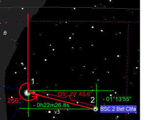

Informació detallada
Accés
- Feu clic en una fila de Llista d'objectes per obtenir informació detallada sobre l'objecte.
- Feu clic dret sobre un objecte del mapa i seleccioneu “Referent a…” en menú contextual emergent.
- Suposant que l'opció Modifica les etiquetes estigui desactivada (icona
 en la barra d'objectes) feu clic sobre l'etiqueta d'un objecte.
en la barra d'objectes) feu clic sobre l'etiqueta d'un objecte. - També podeu obtenir informació detallada amb l'opció “Veïnatge” i llavors fent doble clic en la fila que us interessi, tal com farieu en la Llista d'objectes.

{kind=link}
{kind=link}
Contingut
En qualsevol de les informacions detallades hi podeu distingir quatre paràgrafs amb classes de dades específiques.
Informació de l'objecte i característiques
Per als estels i objectes de cel profund, aquest paràgraf conté informació estàtica sobre l'objecte obtinguda del catàleg. Per aquesta classe d'objectes, correntment comença amb el tipus d'objecte, nom abreujat del catàleg, la identificació en el catàleg (id), i la magnitud relativa. La resta d'aquest contingut depèn completament del catàleg que ha servit per obtenir les dades.
Per als objectes del sistema solar, trobareu informació com el tipus d'objecte, i la identificació (nom). El Sol i la Lluna consten com a planetes encara que no ho siguin, a efectes de simplificació dels quadres informatius. Tota altra informació en aquest paràgraf és calculada dinàmicament des de les dades d'efemèrides. Aquests detalls depenen del tipus d'objecte del sistema solar que esteu considerant.
Coordenades
La primera línia d'aquest paràgraf, que comença amb Coordenades:, informa sobre el sistema de coordenades actiu en el mapa. La carta pot mostrar diverses coordenades en els sistemes equatorials, per exemple en la barra d'estat. Podeu especificar el sistema de coordenades equatorials en el mapa amb la pestanya Carta, Coordenades del menú de Configuració → Carta, Coordenades
Les altres línies us mostren les coordenades de l'objecte en els sistemes de coordenades especificats. Aquí hi podeu veure els sistemes equatorials (aparent i mitjà), i també els sistemes eclíptic i galàctic.
Visibilitat per a la posició del vostre observatori i hora
Aquí trobeu dades específiques relatives a la vostra posició i hora de l'observació. Així, hi ha el nom de l'observatori, amb la data local i l'hora. A continuació hi ha l'hora TU i l'hora local sideral. A continuació hi ha les dades posicionals per al dia i hora usats en el càlcul: angle horari local, azimut i altura. Al final hi veieu dades sobre l'hora i posició de sortida, culminació i posta; a menys que es tracti d'un objecte circumpolar. Llavors només hi ha la culminació.
Separació i decalatge

Aquesta informació proporciona la separació angular entre dos objectes i la posició angular relativa (p.a.) entre els dos darrers objectes seleccionats consecutivament. Aquestes dades només es poden considerar fiables si els objectes no són massa separats angularment, és a dir, si formen part d'un mateix mapa amb camp de visió no massa gran. (Una diferència en el temps combinada amb la dinàmica dels objectes del sistema solar pot donar un valor no gaire precís.) Així, de cara a obtenir separacions angulars, pot ser prudent desactivar la casella Refresca cada... o posar-ne el temps de refresc prou alt perquè us permeti fer el càlcul de la separació angular correctament.
El primer que es mostra és el nom dels dos objectes triats. La línia següent dóna la separació en graus, i la posició angular mesurada des de l'objecte anterior fins l'actual. Aquest angle pren el nord celestial com referència zero i creix en la direcció est, sud, oest. La imatge és prou aclaridora. Sobre l'angle: quan us trobeu en l'hemiferi nord i mireu cara al sud, l'est estarà a la vostra banda esquerra.
La darrera línia mostra el decalatge: salt de l'AR en hores, minuts i segons de temps i salt de la declinació en graus, minuts i segons d'arc en coordenades equatorials.
Per als telescopis amb muntura manual també s'hi afegeixen dues línies més que indiquen les voltes que cal donar als botons-cargol del telescopi per passar d'un objecte a l'altre. Botons d'AR i DEC per a muntures equatorials i Az i Alt per a muntures altazimutals, segons hàgiu configurat a Configuració → Sistema → Pestanya Telescopi →Muntura manual omplenant les dades que hi figuren.
{kind=link}